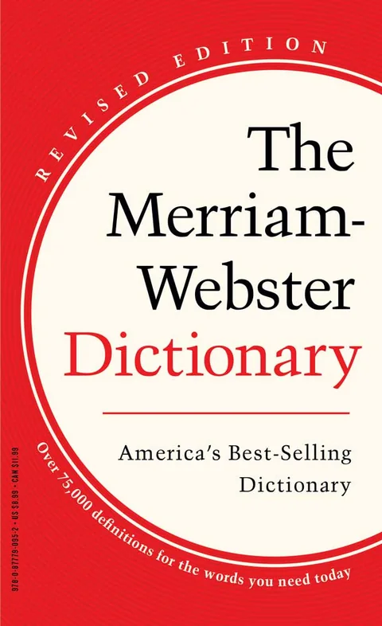
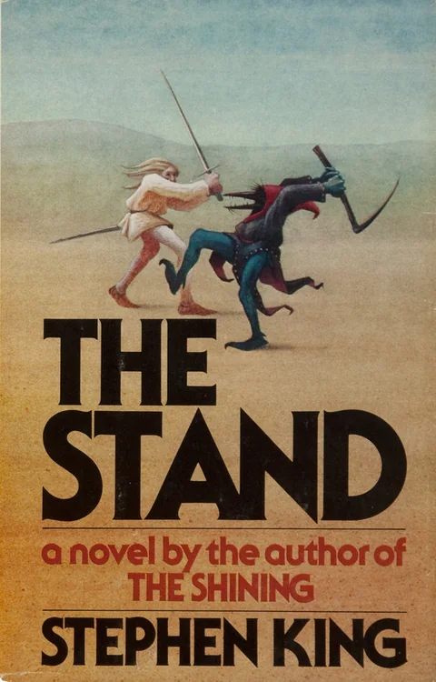
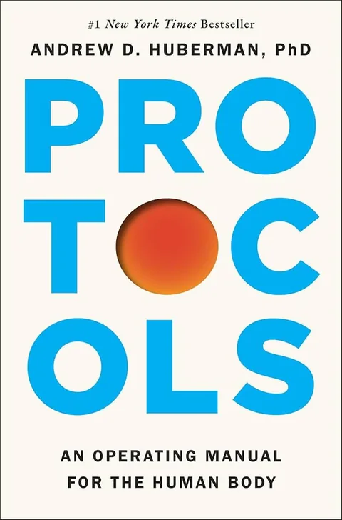
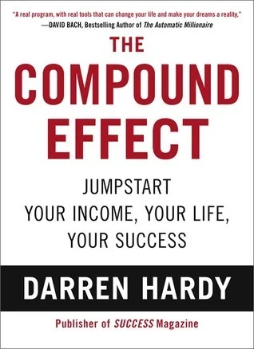
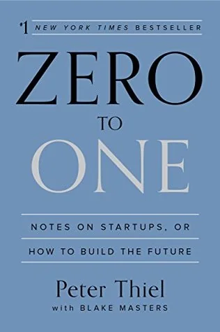
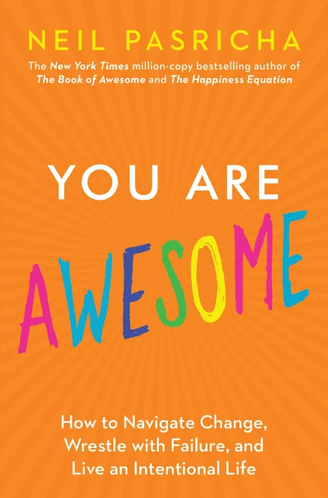
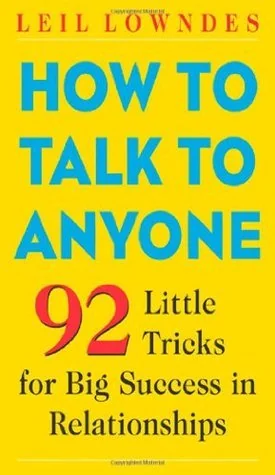
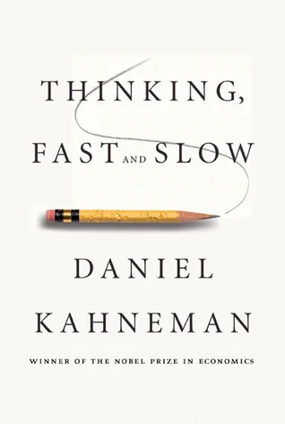
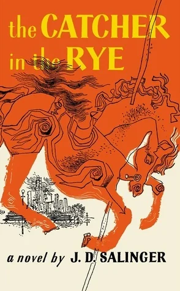

A catalogue
The Library
A partial record of the volumes Mr. Smithers has read in full. His reviews were written over many years in the margins of cocktail napkins, airport lounge receipts and, on one occasion, a parking ticket he was contesting. They have been recovered where possible and transcribed without correction. The collection is small. Mr. Smithers prefers to read things properly.
-

The Holy Bible
The book is, properly speaking, a library, and it should be read as one. Few works attempt to account for the origin of everything in their opening pages, and fewer still do so with such economy. What follows is law, chronicle, poetry and counsel, assembled over a long period by many hands, and the texture changes accordingly. The legal books are exacting; Leviticus in particular feels written out of duty rather than any interest in the reader, and I cannot recommend it as a guide to the table. The psalms restore the earlier force, and the prophetic books have a severity I have come to admire. In the second part the central figure is drawn with remarkable restraint, and the movement from the garden through the trial is as affecting a piece of narrative as I know. I was pleased to see water made into wine, though the vintage was never disclosed, which I still consider an oversight. Revelation is a strange and violent ending, and sits at an odd angle to everything that precedes it. Four stars. I have read it twice, once for the story and once for the structure.
-

The Merriam-Webster Dictionary
It is a compact book, one volume, made for the pocket or the drawer rather than the shelf, and I read it in order, as is my habit. As a dictionary it is clear, current, and unpretentious. The definitions are brief and well judged for ordinary use; the pronunciations are a help; the occasional usage note is sensible. It is an American book, and it does not pretend otherwise. What it cannot offer, and does not try to, is a history of each word. There are no long illustrative quotations, and no sense of a language moving through the centuries. One is simply told what a word means now, which is, for most purposes, enough. I grew attached, again, to entries that appear once and are not mentioned after, and I still use "petrichor" more often than the weather in Milton strictly warrants. I reached the end sooner than I had expected, which I mention as a fact about the book, not as a complaint. Four stars. A practical and well-made volume, and a complete reading of it is a peculiar habit I do not intend to break.
-

12 Rules for Life
The book is a set of twelve rules for conducting a life, drawn from the author's work as a clinician and from a wide, sometimes unruly, reading in mythology, religion and psychology. The rules themselves are plain enough: stand up straight, tell the truth, set your house in order before you set about the world, attend to what is meaningful rather than what is merely convenient. Around each of them he builds a long chapter, mixing case history, family memory and older stories, and the effect is earnest and, at its best, useful. The advice on responsibility and on speech is sound, and I found the chapter on putting one's own affairs in order more bracing than I expected. The book is also longer than its premise requires. Several chapters wander, and the biological analogies, particularly in the opening rule, are asked to carry more weight than they can comfortably bear. I stood up straight for a week and will admit it improved my bearing, if not immediately my character. Four stars. A serious book, unevenly made, and better in its counsel than in its supporting apparatus.
-

The Stand
This is the most ambitious novel I have read, and I do not usually read novels. A plague, imagined with unpleasant plausibility, empties the country; the survivors, drawn together by dreams, divide between two settlements, and what follows is a long account of ordinary people trying to rebuild a world, and of the other sort of people who have no interest in doing so. The early chapters, in which the illness moves from house to house, are the strongest in the book: patient, specific, and difficult to shake. King is good with a large cast. I believed in more of them than I expected to, and I was sorry to leave a few. The middle stretch, the journey west and the founding of the new community, is richer in character than in incident, and some of it could have been firmer. The ending is decisive, but it asks a miracle to do work that the story had, until then, been doing for itself, and I was not entirely persuaded. I began it during a recess in Milton and did not finish it until the sitting was long over. Five stars. I made an exception of my usual habits, and I am glad I did.
-

Behave
Sapolsky's subject is why people do what they do, and his method is to work backwards from the moment of an action: first the nervous system, then the hormones of the preceding hours, then childhood, genes, culture, and finally the long pressure of evolution. It is a clarifying way to organize a vast literature, and he is an unusually good guide to it, exact where he needs to be and willing to say when a finding is less settled than it looks. The book is also very long, and it is honest about complication. By the time one reaches the later chapters, the idea of a single cause, or a simple judgment, has been steadily taken apart, which is the point, and which I found both impressive and, in a courtroom sense, not as immediately useful as I had hoped. I had thought I might cite it. I will not be citing it. The writing, though, is a pleasure: humane, funny in the proper places, and never contemptuous of the reader. Five stars. I have started it once more, from the beginning, at a more reasonable speed.
-

Protocols: An Operating Manual for the Human Body
The premise is that the body can be improved, or at least better maintained, by a set of repeatable practices, and the book lays these out in detail: light, sleep, movement, food, stress, attention. Huberman writes as a scientist addressing a general reader, and the most convincing sections are the ones on circadian light and on sleep, where the advice is clear and the reasoning is easy to follow. Much of the rest is practical and, if followed with some discretion, probably beneficial. The difficulty is the tone of certainty that comes with the word "protocol," which can make a useful habit sound more conclusive than the underlying evidence. The book is also long, and a shorter work might have served the same purpose. I have taken to opening the east window at dawn, which I think has helped, though I still prefer to do it with a glass of something red, which is not, I have gathered, in the manual. Four and a half stars. A serious and usable book, provided one is willing to adapt the instructions.
-

The 48 Laws of Power
Greene offers forty-eight rules for the getting and keeping of power, each illustrated with historical cases drawn from courts, campaigns and households of a more openly treacherous kind than our own. The structure is clear and the reading is easy; he has a talent for the memorable example, and several of the laws name something one recognizes at once from ordinary professional life. As a guide, however, the book is less sure. The laws do not always agree with one another, and the historical material is used to illustrate a point rather than to test it. More awkwardly, the work treats almost every human relation as a contest, which is a poor account of most of the rooms I have spent my life in, and a dangerous one if taken too much to heart. I did try Law 4, on saying less than necessary, during a sentencing in Milton. The results were mixed, and I have since resumed my remarks. Three stars. It is useful as a catalogue of maneuvers I would rather be able to recognize than to practice.
-
Elon Musk
Isaacson follows Musk across rockets, electric cars, and late-night crises with an eye for both the engineering stubbornness and the temperament that drives it. The best chapters are the ones on SpaceX and Tesla factory floors, where an impossible deadline turns into a physical object through sheer refusal to accept standard excuses. Five stars. One finishes the book admiring the nerve, while quietly relieved not to sit across from him in a Monday morning meeting.
-
Joyland
Set in 1973 at a small North Carolina amusement park, this is King working in a quieter, sharper register: part coming-of-age story, part ghost mystery, and unusually tender about first heartbreak and brief summers. It moves cleanly without the sprawl of his longer novels, and the park’s carnival jargon gives every page a lived-in warmth. Five stars. I have never trusted a Ferris wheel, and this did nothing to change my mind, though I was sorry when the season closed.
-

Mind Hunter
Douglas’s account of building the FBI’s Behavioral Science Unit from prison interviews and crime-scene patterns is gripping because it stays grounded in method rather than melodrama. Watching the early profilers argue their way past skeptical local detectives and rigid bureaucracy makes the investigative breakthroughs feel genuinely earned. Five stars. It is brisk, sobering work, and not the sort of volume one leaves open beside a nightcap.
-

’Salem’s Lot
King drops an old-world vampire into a quiet Maine town and takes his time letting the reader meet the shopkeepers, teachers, and gossips before the lights begin to go out. What makes the novel endure is less the horror set pieces than how convincingly an entire community talks itself out of noticing what is happening next door. Five stars. A masterclass in small-town dread, and a useful reminder never to buy an old house at the top of a hill without inspecting the cellar.
-

How to Win Friends & Influence People
Published in 1936 and still disarmingly practical, Carnegie’s advice comes down to a simple courtesy most people forget in a hurry: listen properly, remember a person’s name, and speak to what matters to them rather than trying to score points. Nothing in it is clever for its own sake, which is precisely why nearly a century of slicker manuals have failed to replace it. Five stars. Even a man who prefers his own counsel can benefit from pretending, now and again, to enjoy other people’s.
-

11/22/63
An English teacher steps through a portal in a Maine diner to prevent the assassination of John F. Kennedy, only to discover that the past pushes back and that 1958 has its own stubborn gravity. King’s eye for period detail, diner coffee, and ordinary small-town decency turns an eight-hundred-page premise into a deeply moving story about love and consequence. Five stars. If time travel ever becomes available, I would use it strictly for pre-phylloxera Burgundy, though King makes a persuasive case against meddling.
-

The Hacking of the American Mind
Lustig draws a sharp line between fleeting dopamine pleasure and steadier serotonin contentment, arguing that modern food, screens, and marketing are engineered to keep us confusing the two. One recognizes oneself in plenty of the habits he describes, and it is hard not to admit falling victim to a good deal of it, yet simply seeing the machinery clearly makes a drastic difference. Five stars. A bracing book, though I still reserve the right to order a double cheeseburger when the occasion demands it.
-

Rest, Refocus, Recharge
Wells builds his case for sleep, recovery, and sharper daily focus around concrete one-percent adjustments rather than empty motivational slogans. Critics who complain of humble-bragging miss the point: using his own routines alongside other real examples makes the habits tangible instead of lecturing from a stage about things we already know and ignore. Five stars. Clear, actionable takeaways throughout, even if one prefers to interpret “recharge” as an unhurried evening pour.
-

Buzzed
A clear, level-headed summary of the medical literature on substances from caffeine and alcohol to prescription stimulants and harder drugs, written without moralizing or scare tactics. Its one real omission is a proper reference list at the back, as several of the cited studies are intriguing enough that a curious reader wants to track them down directly. Five stars. As a sommelier, I read the alcohol chapters with professional interest and only minor defensiveness.
-

Sapiens
Harari compresses seventy thousand years of human history into a swift, provocative narrative organized around shared fictions—money, laws, empires, and institutions—that allow strangers to cooperate at scale. Specialists may quibble with his sweeping generalizations, yet the book’s gift for reframing familiar history makes almost every chapter feel fresh. Five stars. It puts one’s minor afternoon inconveniences in sobering perspective, though it has yet to cure me of having opinions about bad service.
-
The Way of the Superior Man
Deida writes in short, direct chapters about living with clear purpose, emotional steadiness, and full attention in both work and intimacy rather than waiting for life to settle down first. Its language is unapologetically bold and occasionally theatrical, yet beneath the phrasing sits a surprisingly practical insistence on presence and responsibility. Five stars. Not every maxim belongs at the dinner table, but the core challenge—to stop hedging—is hard to argue with.
-

The New Encyclopedia of Modern Bodybuilding
At more than eight hundred pages, this is part training manual, part anatomical reference, and part monument to an era when nobody apologized for wanting to look like a bronze statue. The chapters on splits, form, nutrition, and stage preparation are thorough and plainly earned under heavy iron rather than invented in a marketing department. Five stars. Simply lifting the volume off the coffee table counts as a respectable warm-up.
-

The Happiness Equation
Pasricha organizes his argument around nine plain-spoken secrets that invert the usual formula: happiness comes before success, not after it, and protecting one’s time matters more than chasing another rung. It is warm, light on its feet, and full of simple mental models that stick longer than denser psychology texts. Five stars. Any book advising a man to want less and slow down deserves a fair hearing, preferably over something slow-braised.
-

The Compound Effect
Hardy’s thesis is old-fashioned in the best sense: small, unglamorous decisions repeated daily compound over months and years into results that look sudden only to onlookers. There are no tricks or shortcuts promised here, just accountability, tracking, and patience with steady momentum. Five stars. It is short enough to finish in an evening, though applying it unfortunately takes rather longer.
-

The Technological Republic
Karp and Zamiska argue that Western technology lost its nerve when top engineering talent drifted from civic and national purpose toward consumer apps and advertising clicks. The critique of software culture’s timidity is sharp and persuasive, though the book occasionally gestures toward big historical ideals where sharper, more concrete remedies would have been welcome. Four stars. A serious polemic, and a rare Silicon Valley manifesto willing to sound as though it has read something older than last quarter’s memos.
-

Zero to One
Drawn from Stanford lecture notes, Thiel’s slim book argues that lasting companies create genuinely new value—going from zero to one—rather than copying existing rivals into thin-margin competition. It is crisp, contrarian, and refreshingly impatient with startup clichés, even if a few of its grander pronouncements sound smoother in a lecture hall than in the wild. Four stars. An invigorating read, though my own small business remains unapologetically in the business of pouring wine, which has been around since Mesopotamia.
-

On Writing
Half blue-collar memoir of King’s early years and half no-nonsense manual on prose, rhythm, and daily output, this is among the most candid books ever written about working at a desk. The autobiographical chapters have more warmth and bite than the craft checklist, and his famous hostility toward adverbs borders on personal vendetta, yet nearly every page rings true. Four stars. I still use the occasional adverb when the roast warrants it, but I have the decency to feel slightly guilty.
-
The Gunslinger
Lean, austere, and strangely hypnotic, the opening volume of The Dark Tower follows Roland Deschain across an endless desert in pursuit of the man in black. Enjoyable from the first line, though its stitched-together origins show in places and it withholds far more answers than it gives. Four stars. A brisk, sun-bleached detour into myth, and a reminder that walking across a desert is best observed from a comfortable chair.
-

Atomic Habits
Clear strips habit formation down to cues, friction, environment design, and identity—making the case that reliable systems matter far more than lofty goals. It is lucid, cleanly organized, and immediately usable, even if a fair share of its insights are common sense given respectable charts and four-step names. Four stars. I placed a clean decanter where I can see it and moved the corkscrew closer; the system works remarkably well.
-
The Power of Now
Tolle’s central observation—that most human misery comes from living in anxious anticipation or stale regret rather than the present moment—is stated clearly and returns with real calm throughout the book. The question-and-answer format grows repetitive in the middle chapters, and some of the mystical vocabulary will test a skeptical reader, yet the core practice of watching one’s own noisy thoughts remains genuinely useful. Four stars. I tried sitting in pure stillness before dinner service; it lasted eleven minutes before someone asked about the Pinot Noir.
-

You Are Awesome
Pasricha’s follow-up gathers nine practical strategies for absorbing failure, reframing setbacks, and keeping one’s footing when plans go sideways. The advice is grounded and genuinely encouraging, though the exuberant title and upbeat packaging ask a reader of dry temperament to look past the cover. Four stars. Beneath the cheerfulness lies sensible counsel on resilience, best absorbed quietly without telling anyone what the title says.
-

Peak
A solid general guide to athletic performance covering sleep, conditioning, recovery, and nutrition in plain, usable language. Its balance is slightly uneven—the gut microbiome receives an awful lot of ink while post-workout nutrition could easily have gone deeper—yet as an all-round reference it serves well. Four stars. Useful even for those of us whose primary cardiovascular exercise consists of climbing the cellar stairs twice before dinner.
-

How to Talk to Anyone
Lowndes collects ninety-two specific conversational habits, posture cues, and small-talk tactics for navigating crowded rooms and making people feel genuinely noticed. Much of it is observant and surprisingly effective in practice, though the brisk, tactical framing can make ordinary human warmth feel a touch mechanical if followed too literally. Four stars. Good rules for working a dining room, provided one does not look as though one is checking them off on a cuff.
-

Mr. Mercedes
King trades the supernatural for a straight hard-boiled detective thriller, pitting retired cop Bill Hodges against a killer who drove a stolen Mercedes into a morning job-fair queue. It moves briskly and Hodges is likable enough company, yet the cat-and-mouse plotting leans on familiar thriller conventions and never quite builds the eerie weight of King’s finest work. Three stars. Serviceable suspense for a long flight, though I remain partial to a well-made haunted town.
-

Thinking, Fast and Slow
Not yet rated
Kahneman maps the tug-of-war between fast, intuitive judgment and slower, deliberate reasoning, showing how anchoring, loss aversion, and overconfidence quietly bend even expert decisions. It is dense, rigorous, and humbling in equal measure—one catches oneself committing half the cognitive errors while still reading the chapter that names them. Not yet rated, largely because System 1 wants to give it five stars and System 2 is still auditing the footnotes.
-

Deep Work
Not yet rated
Newport makes a disciplined case that sustained, distraction-free concentration is growing both rarer and more valuable in an economy overrun by shallow emails and open-plan chatter. His rules for scheduling solitude and quitting performative busyness are crisp and hard to refute. Not yet rated; I mean to assign a proper score just as soon as I stop checking messages long enough to finish the thought.
-

The Catcher in the Rye
Not yet rated
Holden Caulfield wanders through three wintry days in Manhattan after leaving Pencey Prep, recording every phony, cab driver, and museum gallery with an exasperating mix of sharpness and vulnerability. Salinger’s ear for restless adolescent speech still carries an unmistakable sting decades on. Not yet rated—one respects the craft immediately, even if forty-eight hours in Holden’s company is quite enough.
-

To Kill a Mockingbird
Not yet rated
Told through Scout Finch’s childhood eyes in Depression-era Maycomb, Alabama, Lee’s novel balances porch-swing warmth with the moral weight of Atticus Finch’s defense of Tom Robinson. Its endurance rests on how plainly it shows courage and prejudice operating side by side in ordinary neighbours. Not yet rated, though handing out stars to a book of this standing feels slightly presumptuous, like grading a landmark.
-
The Great Gatsby
Not yet rated
Fitzgerald packs an extraordinary amount of longing, vanity, and social cruelty into barely two hundred pages of West Egg champagne and careless wealth. Seen through Nick Carraway, Gatsby’s devotion to an idealized past is both absurd and oddly grand. Not yet rated; the prose alone earns its keep, even if everyone in the book would have been unbearable as a dinner guest.
-

The One Thing
Not yet rated
Keller and Papasan strip productivity down to a single focusing question: identify the one task that makes everything else easier or unnecessary, and protect the morning hours until it is done. It is deliberately narrow and repeats its domino metaphor often, yet the core discipline of refusing scattered multitasking is sound. Not yet rated, as I am still deciding which single task to leave unbothered first.
Further reviews are being recovered. The estate thanks you for your patience.